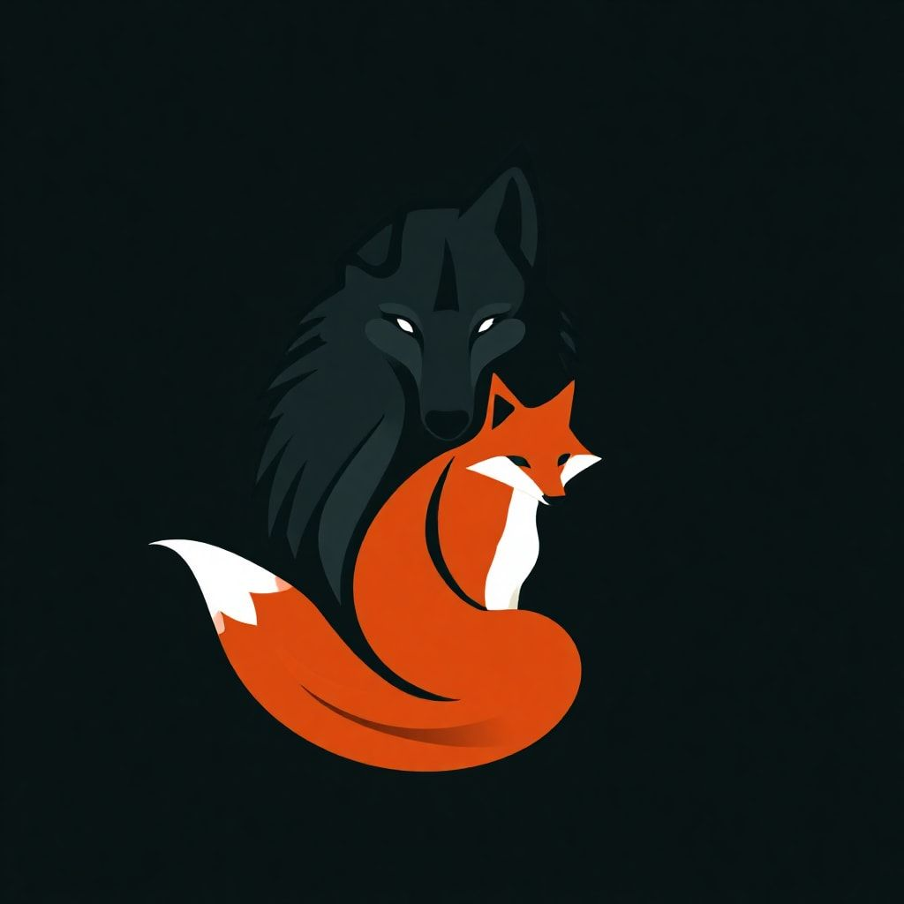
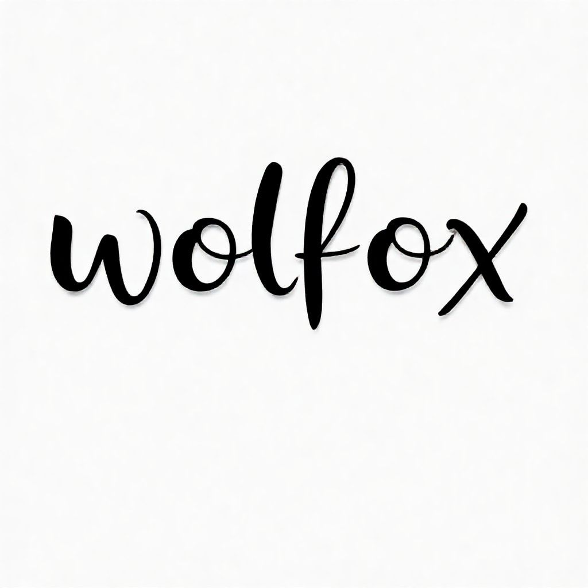

<header class="site-header">
  <a class="site-logo-link" href="index.html" aria-label="返回主页">
    <div class="site-logo-panel">
      
      <div class="site-logo-fallback" hidden>W</div>
    </div>
  </a>
  <div class="nav-center">
    <a class="nav-wordmark-wrap" href="index.html" aria-label="返回主页">
      
      <div class="brand-wordmark-fallback" hidden>Wolfox</div>
    </a>
    <nav class="site-nav" aria-label="主导航">
      <a href="index.html" data-nav="home">主页面</a>
      <a href="projects.html" data-nav="projects">项目</a>
      <a href="resources.html" data-nav="resources">资料</a>
    </nav>
  </div>
  <div class="site-author">作者：涂Per</div>
</header>
